Code
pacman::p_load(sf, tmap, tidyverse, readr, DT)This hands-on exercise follows the learning flow from Chapter 21 of R for Visual Analytics. The teacher’s example focuses on choropleth mapping with tmap by combining Singapore planning subzone boundary data with population attribute data. After reproducing the main classroom examples, I add a Self Trying section to explore ageing and dependency patterns in a slightly different way.
pacman::p_load(sf, tmap, tidyverse, readr, DT)For this exercise, sf is used to handle geospatial data, tmap is used to draw thematic maps, and tidyverse is used for data wrangling.
The geospatial data is the Master Plan 2014 Subzone Boundary shapefile. It should be stored in the folder data/geospatial.
mpsz <- st_read(
dsn = "data/geospatial",
layer = "MP14_SUBZONE_WEB_PL"
)Reading layer `MP14_SUBZONE_WEB_PL' from data source
`E:\JUNCHENLI\ISSS608-VAA\Hands-on_Ex\Hands-on_Ex09\data\geospatial'
using driver `ESRI Shapefile'
Simple feature collection with 323 features and 15 fields
Geometry type: MULTIPOLYGON
Dimension: XY
Bounding box: xmin: 2667.538 ymin: 15748.72 xmax: 56396.44 ymax: 50256.33
Projected CRS: SVY21mpszSimple feature collection with 323 features and 15 fields
Geometry type: MULTIPOLYGON
Dimension: XY
Bounding box: xmin: 2667.538 ymin: 15748.72 xmax: 56396.44 ymax: 50256.33
Projected CRS: SVY21
First 10 features:
OBJECTID SUBZONE_NO SUBZONE_N SUBZONE_C CA_IND PLN_AREA_N
1 1 1 MARINA SOUTH MSSZ01 Y MARINA SOUTH
2 2 1 PEARL'S HILL OTSZ01 Y OUTRAM
3 3 3 BOAT QUAY SRSZ03 Y SINGAPORE RIVER
4 4 8 HENDERSON HILL BMSZ08 N BUKIT MERAH
5 5 3 REDHILL BMSZ03 N BUKIT MERAH
6 6 7 ALEXANDRA HILL BMSZ07 N BUKIT MERAH
7 7 9 BUKIT HO SWEE BMSZ09 N BUKIT MERAH
8 8 2 CLARKE QUAY SRSZ02 Y SINGAPORE RIVER
9 9 13 PASIR PANJANG 1 QTSZ13 N QUEENSTOWN
10 10 7 QUEENSWAY QTSZ07 N QUEENSTOWN
PLN_AREA_C REGION_N REGION_C INC_CRC FMEL_UPD_D X_ADDR
1 MS CENTRAL REGION CR 5ED7EB253F99252E 2014-12-05 31595.84
2 OT CENTRAL REGION CR 8C7149B9EB32EEFC 2014-12-05 28679.06
3 SR CENTRAL REGION CR C35FEFF02B13E0E5 2014-12-05 29654.96
4 BM CENTRAL REGION CR 3775D82C5DDBEFBD 2014-12-05 26782.83
5 BM CENTRAL REGION CR 85D9ABEF0A40678F 2014-12-05 26201.96
6 BM CENTRAL REGION CR 9D286521EF5E3B59 2014-12-05 25358.82
7 BM CENTRAL REGION CR 7839A8577144EFE2 2014-12-05 27680.06
8 SR CENTRAL REGION CR 48661DC0FBA09F7A 2014-12-05 29253.21
9 QT CENTRAL REGION CR 1F721290C421BFAB 2014-12-05 22077.34
10 QT CENTRAL REGION CR 3580D2AFFBEE914C 2014-12-05 24168.31
Y_ADDR SHAPE_Leng SHAPE_Area geometry
1 29220.19 5267.381 1630379.3 MULTIPOLYGON (((31495.56 30...
2 29782.05 3506.107 559816.2 MULTIPOLYGON (((29092.28 30...
3 29974.66 1740.926 160807.5 MULTIPOLYGON (((29932.33 29...
4 29933.77 3313.625 595428.9 MULTIPOLYGON (((27131.28 30...
5 30005.70 2825.594 387429.4 MULTIPOLYGON (((26451.03 30...
6 29991.38 4428.913 1030378.8 MULTIPOLYGON (((25899.7 297...
7 30230.86 3275.312 551732.0 MULTIPOLYGON (((27746.95 30...
8 30222.86 2208.619 290184.7 MULTIPOLYGON (((29351.26 29...
9 29893.78 6571.323 1084792.3 MULTIPOLYGON (((20996.49 30...
10 30104.18 3454.239 631644.3 MULTIPOLYGON (((24472.11 29...The attribute data is the Singapore Residents by Planning Area, Subzone, Age Group, Sex and Type of Dwelling dataset from 2011 to 2020. It should be stored in the folder data/aspatial.
popdata <- read_csv("data/aspatial/respopagesextod2011to2020.csv")glimpse(popdata)Rows: 984,656
Columns: 7
$ PA <chr> "Ang Mo Kio", "Ang Mo Kio", "Ang Mo Kio", "Ang Mo Kio", "Ang Mo K…
$ SZ <chr> "Ang Mo Kio Town Centre", "Ang Mo Kio Town Centre", "Ang Mo Kio T…
$ AG <chr> "0_to_4", "0_to_4", "0_to_4", "0_to_4", "0_to_4", "0_to_4", "0_to…
$ Sex <chr> "Males", "Males", "Males", "Males", "Males", "Males", "Males", "M…
$ TOD <chr> "HDB 1- and 2-Room Flats", "HDB 3-Room Flats", "HDB 4-Room Flats"…
$ Pop <dbl> 0, 10, 30, 50, 0, 0, 40, 0, 0, 10, 30, 60, 0, 0, 40, 0, 0, 10, 30…
$ Time <dbl> 2011, 2011, 2011, 2011, 2011, 2011, 2011, 2011, 2011, 2011, 2011,…The teacher’s example prepares a 2020 population table at the planning subzone level. The original learning point is to derive the number of young residents, economically active residents, aged residents, total residents, and the dependency ratio.
Instead of relying on column positions after pivot_wider(), I use a more robust method. The starting age is extracted from the age-group label and then grouped into YOUNG, ECONOMY ACTIVE, and AGED.
prepare_population <- function(selected_year) {
popdata %>%
filter(Time == selected_year) %>%
mutate(
age_start = parse_number(AG),
age_group_type = case_when(
age_start <= 24 ~ "YOUNG",
age_start >= 25 & age_start <= 64 ~ "ECONOMY ACTIVE",
age_start >= 65 ~ "AGED",
TRUE ~ NA_character_
)
) %>%
filter(!is.na(age_group_type)) %>%
group_by(PA, SZ, age_group_type) %>%
summarise(POP = sum(Pop, na.rm = TRUE), .groups = "drop") %>%
pivot_wider(
names_from = age_group_type,
values_from = POP,
values_fill = 0
) %>%
mutate(
TOTAL = YOUNG + `ECONOMY ACTIVE` + AGED,
DEPENDENCY = (YOUNG + AGED) / `ECONOMY ACTIVE`,
YOUNG_SHARE = YOUNG / TOTAL,
AGED_SHARE = AGED / TOTAL,
WORKING_SHARE = `ECONOMY ACTIVE` / TOTAL
) %>%
select(
PA, SZ, YOUNG, `ECONOMY ACTIVE`, AGED, TOTAL,
DEPENDENCY, YOUNG_SHARE, AGED_SHARE, WORKING_SHARE
) %>%
mutate(across(c(PA, SZ), toupper)) %>%
filter(`ECONOMY ACTIVE` > 0)
}popdata2020 <- prepare_population(2020)glimpse(popdata2020)Rows: 234
Columns: 10
$ PA <chr> "ANG MO KIO", "ANG MO KIO", "ANG MO KIO", "ANG MO KIO…
$ SZ <chr> "ANG MO KIO TOWN CENTRE", "CHENG SAN", "CHONG BOON", …
$ YOUNG <dbl> 1290, 5640, 5100, 4620, 1880, 3330, 1940, 4190, 1110,…
$ `ECONOMY ACTIVE` <dbl> 2760, 16460, 15000, 13010, 3630, 9050, 4480, 11950, 2…
$ AGED <dbl> 760, 6050, 6470, 5120, 1310, 3610, 1530, 5100, 750, 4…
$ TOTAL <dbl> 4810, 28150, 26570, 22750, 6820, 15990, 7950, 21240, …
$ DEPENDENCY <dbl> 0.7427536, 0.7102066, 0.7713333, 0.7486549, 0.8787879…
$ YOUNG_SHARE <dbl> 0.2681913, 0.2003552, 0.1919458, 0.2030769, 0.2756598…
$ AGED_SHARE <dbl> 0.15800416, 0.21492007, 0.24350772, 0.22505495, 0.192…
$ WORKING_SHARE <dbl> 0.5738046, 0.5847247, 0.5645465, 0.5718681, 0.5322581…The georelational join uses SUBZONE_N from the geospatial layer and SZ from the attribute table.
mpsz_pop2020 <- left_join(
mpsz,
popdata2020,
by = c("SUBZONE_N" = "SZ")
)dir.create("data/rds", recursive = TRUE, showWarnings = FALSE)
write_rds(mpsz_pop2020, "data/rds/mpszpop2020.rds")The simplest way to create a choropleth map is to use qtm().

tmap_mode("plot")
qtm(
mpsz_pop2020,
fill = "DEPENDENCY"
)The tm_shape() and tm_polygons() approach provides more control over classification, colour, legend, title and borders.
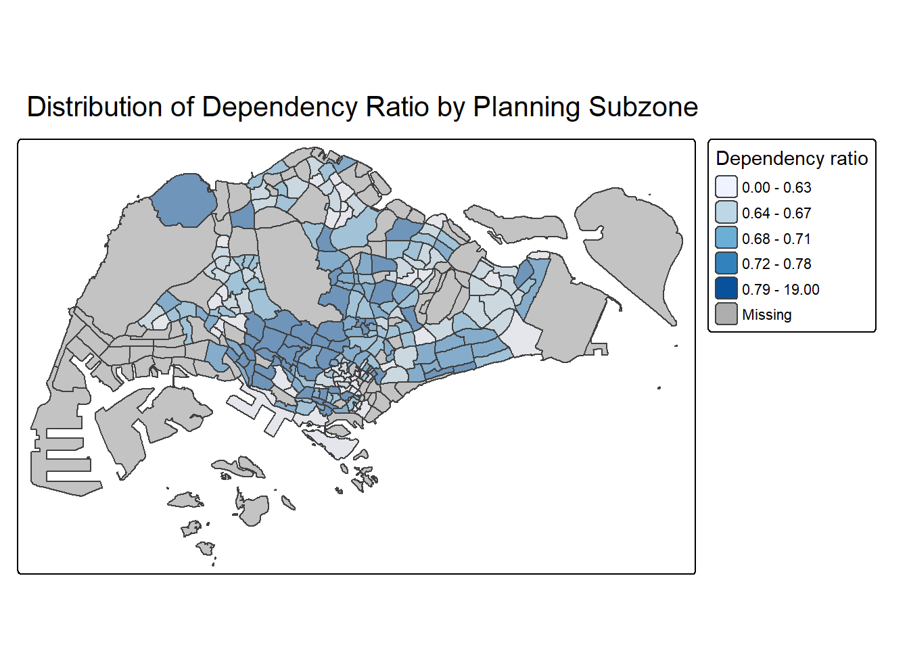
tm_shape(mpsz_pop2020) +
tm_polygons(
"DEPENDENCY",
style = "quantile",
n = 5,
palette = "Blues",
title = "Dependency ratio"
) +
tm_borders(alpha = 0.5) +
tm_layout(
main.title = "Distribution of Dependency Ratio by Planning Subzone",
frame = TRUE
)A base map helps us check whether the spatial layer is imported correctly.
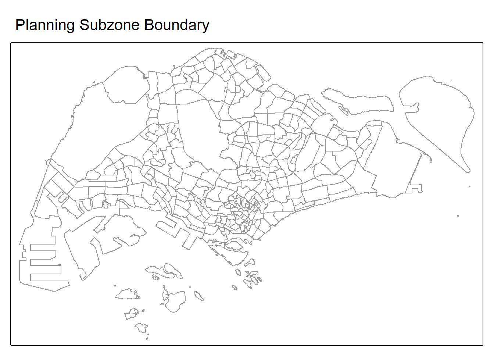
tm_shape(mpsz_pop2020) +
tm_polygons(col = "white", border.col = "grey60") +
tm_layout(main.title = "Planning Subzone Boundary")tm_fill() shades the polygon, while tm_borders() draws the boundary line.
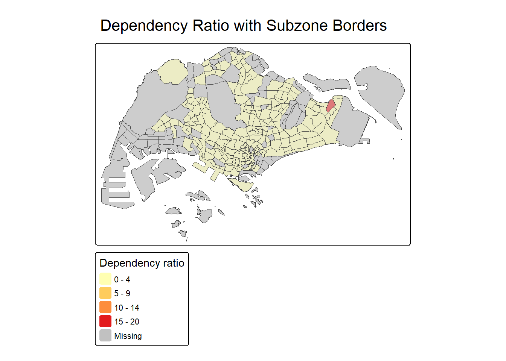
tm_shape(mpsz_pop2020) +
tm_fill(
"DEPENDENCY",
style = "pretty",
palette = "YlOrRd",
title = "Dependency ratio"
) +
tm_borders(lwd = 0.01, alpha = 0.5) +
tm_layout(main.title = "Dependency Ratio with Subzone Borders")Different classification methods can lead to different visual interpretations. Here, Jenks and equal interval are compared.
tm_shape(mpsz_pop2020) +
tm_polygons(
"DEPENDENCY",
style = "jenks",
n = 5,
palette = "Blues",
title = "Dependency ratio"
) +
tm_borders(alpha = 0.5) +
tm_layout(main.title = "Jenks Classification")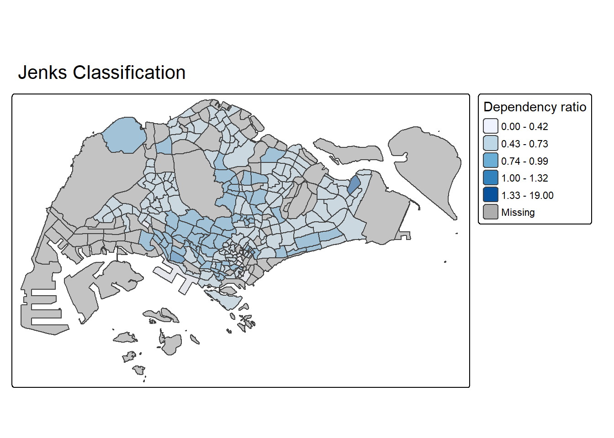
tm_shape(mpsz_pop2020) +
tm_polygons(
"DEPENDENCY",
style = "equal",
n = 5,
palette = "Blues",
title = "Dependency ratio"
) +
tm_borders(alpha = 0.5) +
tm_layout(main.title = "Equal Interval Classification")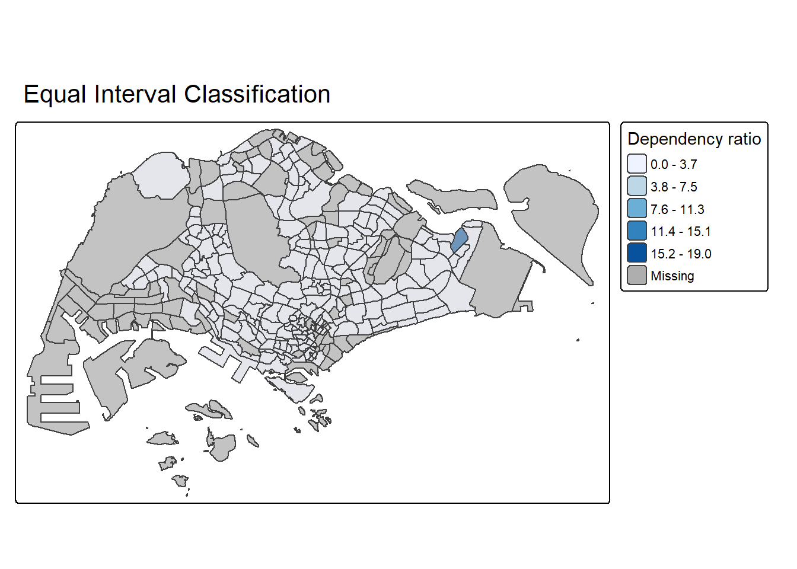
Before using custom breaks, it is useful to check descriptive statistics.
summary(mpsz_pop2020$DEPENDENCY) Min. 1st Qu. Median Mean 3rd Qu. Max. NA's
0.0000 0.6519 0.7025 0.7742 0.7645 19.0000 92 tm_shape(mpsz_pop2020) +
tm_polygons(
"DEPENDENCY",
breaks = c(0, 0.60, 0.70, 0.80, 0.90, 1.00, Inf),
palette = "YlOrRd",
title = "Dependency ratio"
) +
tm_borders(alpha = 0.5) +
tm_layout(main.title = "Dependency Ratio with Custom Breaks")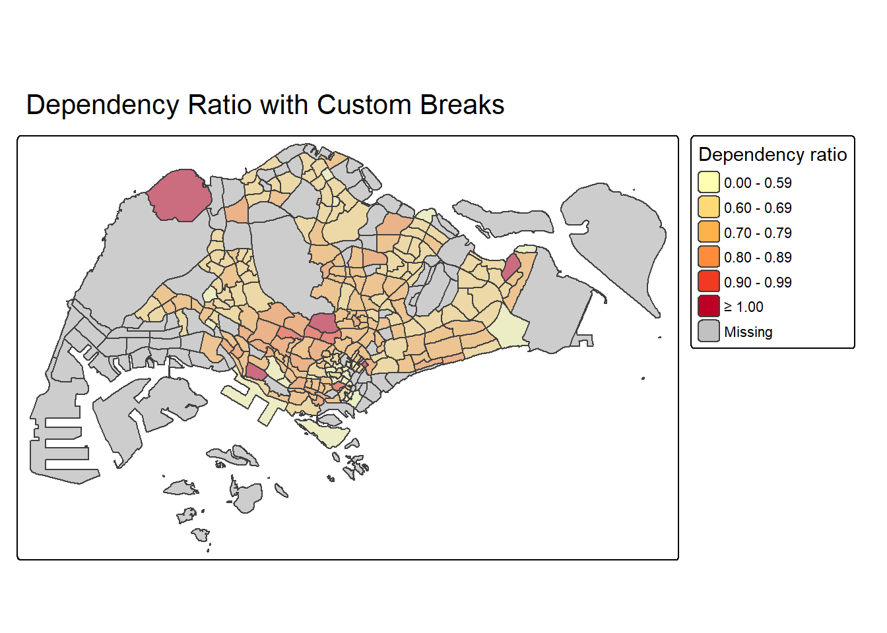
tm_shape(mpsz_pop2020) +
tm_polygons(
"DEPENDENCY",
style = "quantile",
n = 5,
palette = "Greens",
title = "Dependency ratio"
) +
tm_borders(alpha = 0.5) +
tm_layout(main.title = "Dependency Ratio with Green Palette")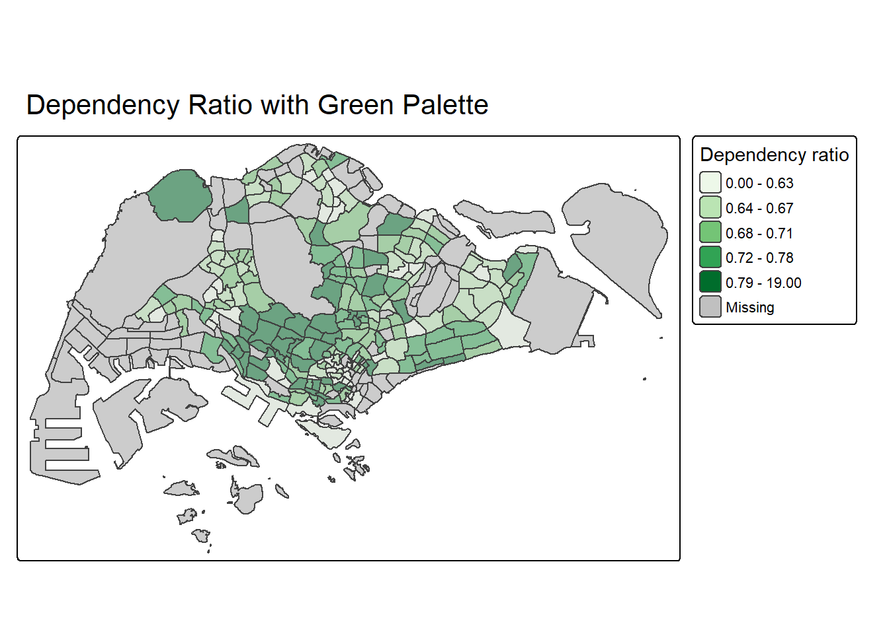
tm_shape(mpsz_pop2020) +
tm_polygons(
"DEPENDENCY",
style = "quantile",
n = 5,
palette = "-Greens",
title = "Dependency ratio"
) +
tm_borders(alpha = 0.5) +
tm_layout(main.title = "Dependency Ratio with Reversed Green Palette")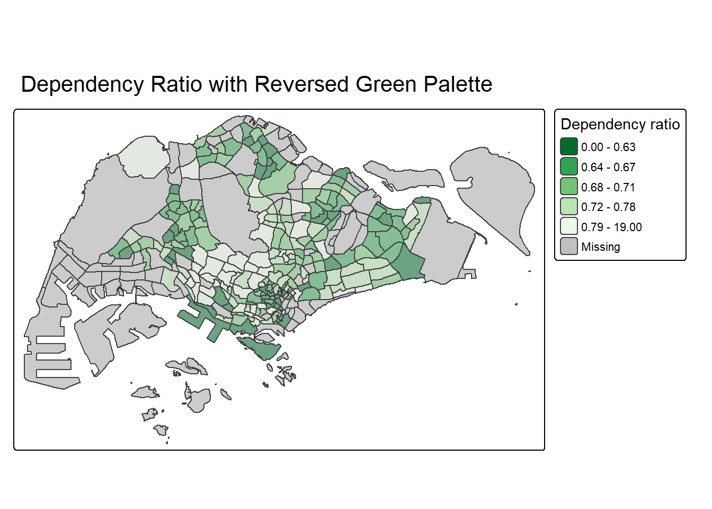
This version adds title, compass, scale bar and credits.
tm_shape(mpsz_pop2020) +
tm_polygons(
fill = "DEPENDENCY",
fill.scale = tm_scale_intervals(
style = "quantile",
n = 5,
values = "Blues"
),
fill.legend = tm_legend(
title = "Dependency ratio"
)
) +
tm_borders(
col = "grey40",
lwd = 0.5
) +
tm_compass(
type = "8star",
size = 2,
position = c("right", "top")
) +
tm_scalebar(
position = c("left", "bottom")
) +
tm_layout(
main.title = "Distribution of Dependency Ratio by Planning Subzone",
frame = TRUE
) +
tm_credits(
"Source: URA Master Plan 2014 Subzone Boundary and DOS population data",
position = c("left", "bottom")
)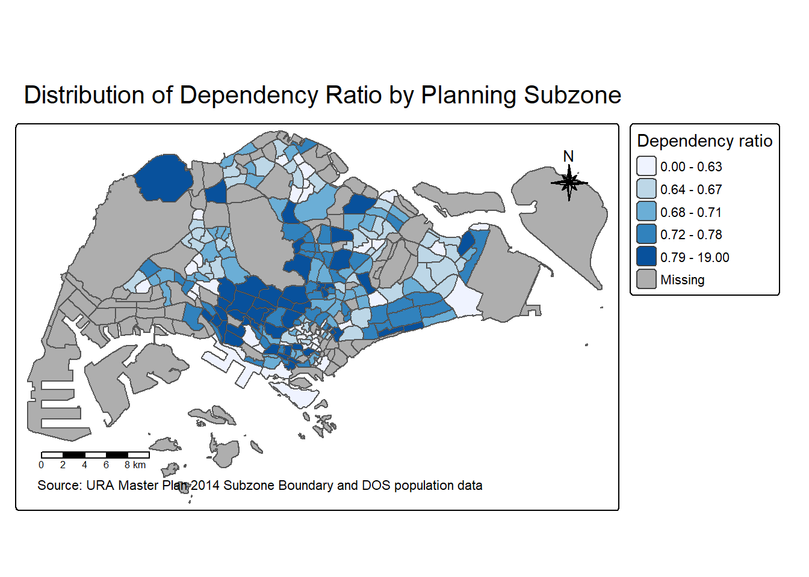
Small multiples allow several variables to be compared side by side.
tm_shape(mpsz_pop2020) +
tm_fill(
c("YOUNG", "AGED"),
style = "quantile",
palette = "Blues"
) +
tm_borders(alpha = 0.5) +
tm_layout(legend.position = c("right", "bottom"))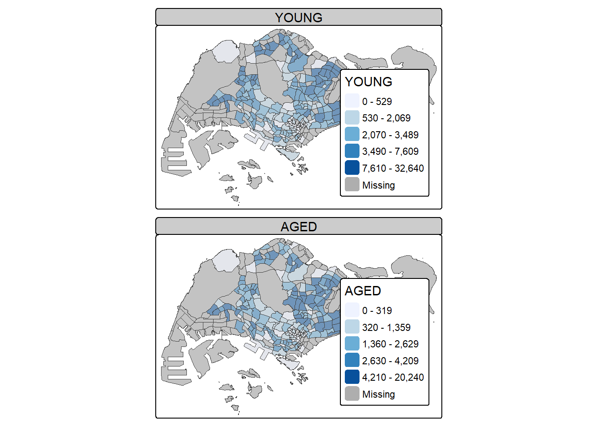
tm_shape(mpsz_pop2020) +
tm_fill(
"DEPENDENCY",
style = "quantile",
palette = "Blues"
) +
tm_facets(by = "REGION_N", free.coords = TRUE) +
tm_borders(alpha = 0.5) +
tm_layout(
legend.show = FALSE,
main.title = "Dependency Ratio by Region"
)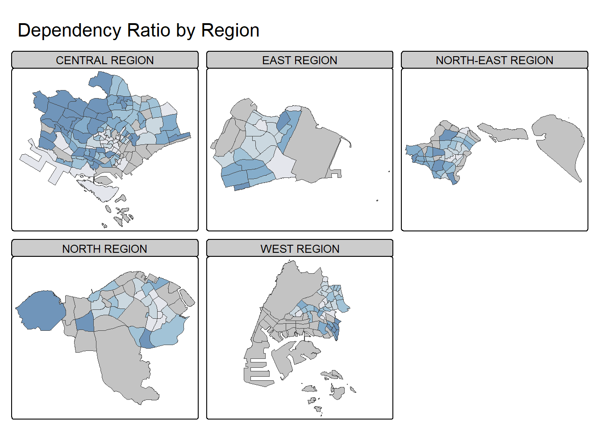
youngmap <- tm_shape(mpsz_pop2020) +
tm_polygons(
"YOUNG",
style = "quantile",
palette = "Blues",
title = "Young population"
) +
tm_borders(alpha = 0.5)
agedmap <- tm_shape(mpsz_pop2020) +
tm_polygons(
"AGED",
style = "quantile",
palette = "Greens",
title = "Aged population"
) +
tm_borders(alpha = 0.5)
tmap_arrange(youngmap, agedmap, ncol = 2)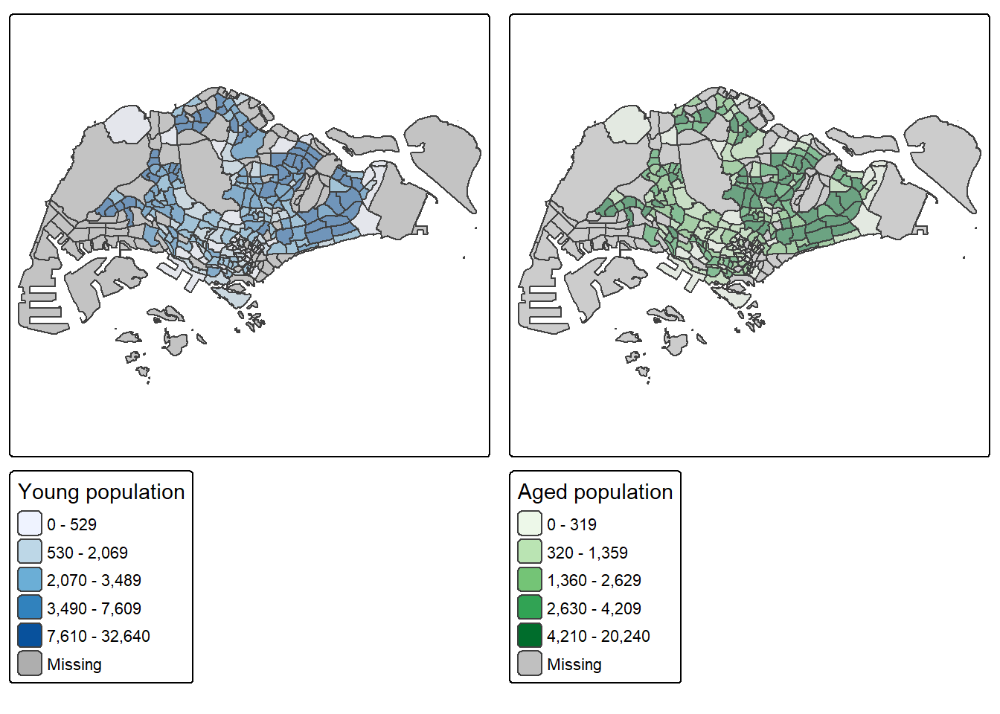
This map focuses only on subzones located in the Central Region.
tm_shape(mpsz_pop2020[mpsz_pop2020$REGION_N == "CENTRAL REGION", ]) +
tm_fill(
"DEPENDENCY",
style = "quantile",
palette = "Blues",
title = "Dependency ratio"
) +
tm_borders(alpha = 0.5) +
tm_layout(
legend.outside = TRUE,
frame = FALSE,
main.title = "Dependency Ratio in the Central Region"
)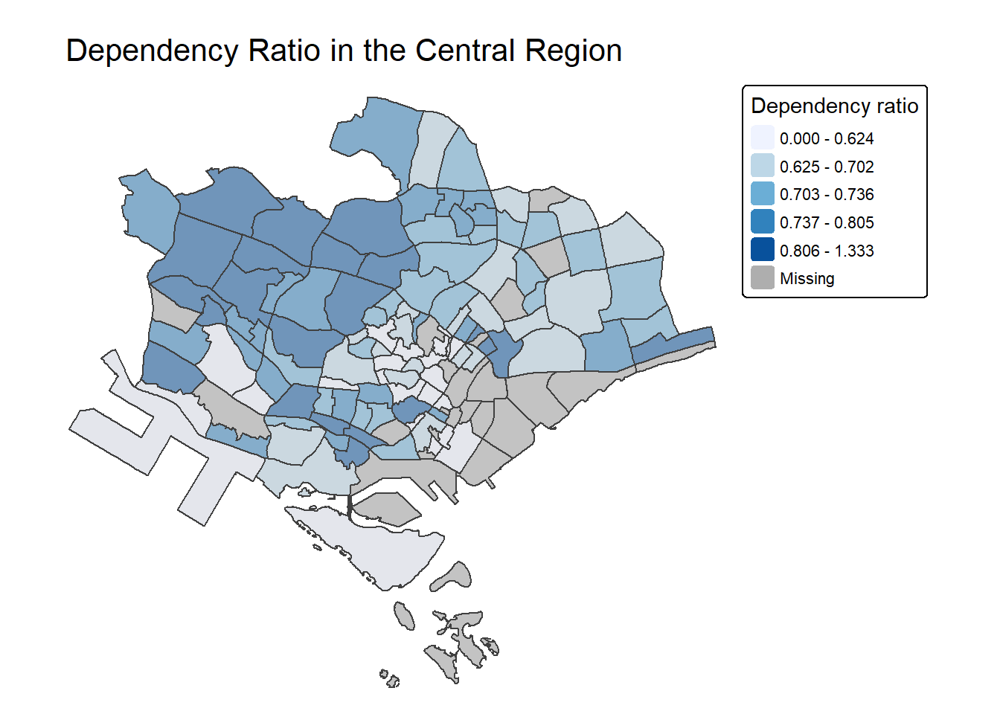
In this self-trying section, I use the same choropleth mapping techniques from the teacher’s example, but the analytical focus is slightly different. Instead of only mapping the dependency ratio, I compare ageing share, young share, working-age share and the change in dependency ratio between 2011 and 2020.
self_2020 <- mpsz_pop2020 %>%
mutate(
DEPENDENCY_LABEL = case_when(
DEPENDENCY < 0.60 ~ "Low dependency",
DEPENDENCY >= 0.60 & DEPENDENCY < 0.80 ~ "Moderate dependency",
DEPENDENCY >= 0.80 & DEPENDENCY < 1.00 ~ "High dependency",
DEPENDENCY >= 1.00 ~ "Very high dependency",
TRUE ~ NA_character_
)
)self_2020 %>%
st_drop_geometry() %>%
summarise(
min_dependency = min(DEPENDENCY, na.rm = TRUE),
median_dependency = median(DEPENDENCY, na.rm = TRUE),
mean_dependency = mean(DEPENDENCY, na.rm = TRUE),
max_dependency = max(DEPENDENCY, na.rm = TRUE),
min_aged_share = min(AGED_SHARE, na.rm = TRUE),
max_aged_share = max(AGED_SHARE, na.rm = TRUE)
) min_dependency median_dependency mean_dependency max_dependency
1 0 0.7024793 0.7742324 19
min_aged_share max_aged_share
1 0 0.95Here, I highlight subzones where dependency ratio is at least 1. This means the number of young and aged residents is at least as large as the number of economically active residents.
high_dependency <- self_2020 %>%
filter(DEPENDENCY >= 1)tm_shape(self_2020) +
tm_polygons(col = "grey90", border.col = "white") +
tm_shape(high_dependency) +
tm_polygons(
"DEPENDENCY",
style = "quantile",
n = 5,
palette = "Reds",
title = "Dependency ratio"
) +
tm_borders(col = "grey30", lwd = 0.2) +
tm_layout(
main.title = "Subzones with Very High Dependency Ratio, 2020",
legend.outside = TRUE
)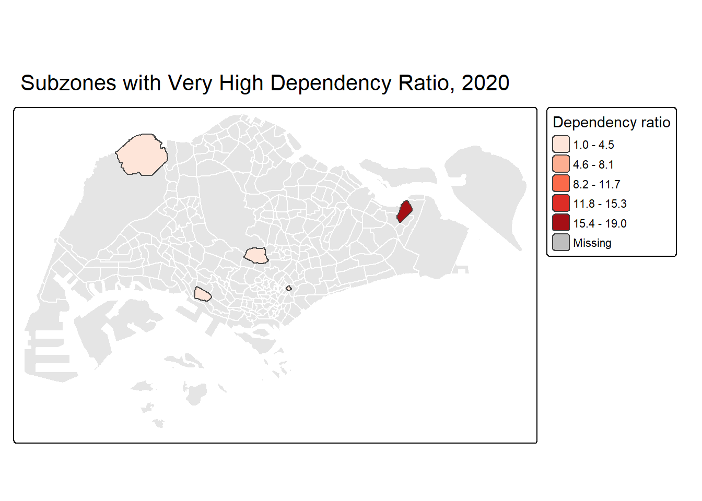
A table is useful because a map shows location well, but it does not always allow precise ranking.
self_2020 %>%
st_drop_geometry() %>%
select(PLN_AREA_N, SUBZONE_N, REGION_N, DEPENDENCY, YOUNG_SHARE, AGED_SHARE, TOTAL) %>%
arrange(desc(DEPENDENCY)) %>%
slice_head(n = 20) %>%
DT::datatable(
filter = "top",
rownames = FALSE,
options = list(pageLength = 10, autoWidth = TRUE),
colnames = c(
"Planning Area", "Subzone", "Region", "Dependency Ratio",
"Young Share", "Aged Share", "Total Population"
)
)This part extends the teacher’s example by comparing two years. The aim is to identify subzones where the dependency ratio increased or decreased between 2011 and 2020.
popdata2011 <- prepare_population(2011) %>%
select(SZ, DEPENDENCY_2011 = DEPENDENCY)
popdata2020_change <- prepare_population(2020) %>%
select(SZ, DEPENDENCY_2020 = DEPENDENCY)
dependency_change <- popdata2011 %>%
inner_join(popdata2020_change, by = "SZ") %>%
mutate(
DEPENDENCY_CHANGE = DEPENDENCY_2020 - DEPENDENCY_2011
)
mpsz_dependency_change <- left_join(
mpsz,
dependency_change,
by = c("SUBZONE_N" = "SZ")
)A diverging colour palette is used because the value can be positive or negative.
tm_shape(mpsz_dependency_change) +
tm_polygons(
"DEPENDENCY_CHANGE",
style = "pretty",
palette = "RdBu",
title = "Change in dependency ratio"
) +
tm_borders(alpha = 0.4) +
tm_layout(
main.title = "Change in Dependency Ratio by Planning Subzone, 2011-2020",
legend.outside = TRUE
)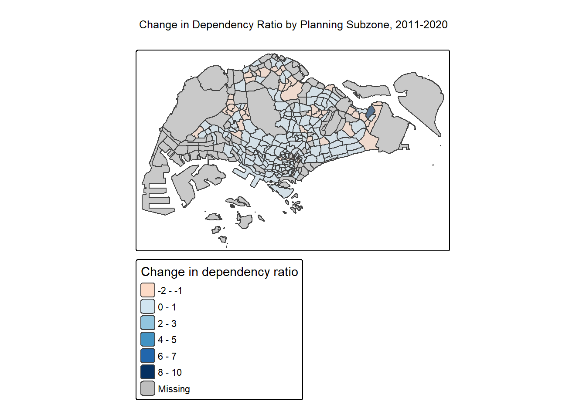
This final map compares the spatial distribution of dependency ratio in 2011 and 2020 side by side.
mpsz_pop2011 <- left_join(
mpsz,
prepare_population(2011),
by = c("SUBZONE_N" = "SZ")
)
map_2011 <- tm_shape(mpsz_pop2011) +
tm_polygons(
"DEPENDENCY",
style = "quantile",
n = 5,
palette = "Blues",
title = "2011"
) +
tm_borders(alpha = 0.4) +
tm_layout(main.title = "2011")
map_2020 <- tm_shape(mpsz_pop2020) +
tm_polygons(
"DEPENDENCY",
style = "quantile",
n = 5,
palette = "Blues",
title = "2020"
) +
tm_borders(alpha = 0.4) +
tm_layout(main.title = "2020")
tmap_arrange(map_2011, map_2020, ncol = 2)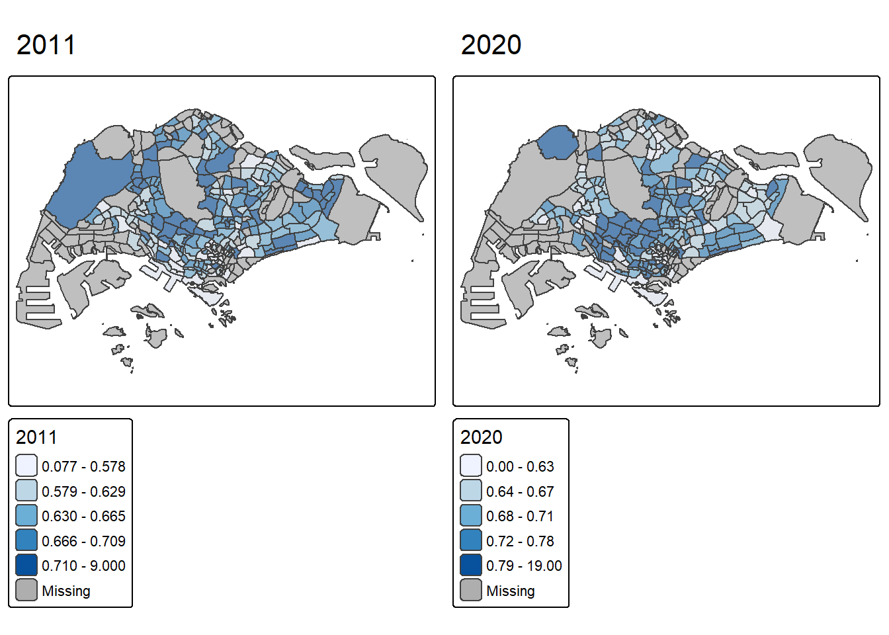
The self-trying maps show that dependency ratio is not only a single demographic measure; it can be decomposed into young share and aged share. Some subzones may show high dependency because they have many young residents, while others may show high dependency because they have a larger aged population. The 2011-2020 change map provides an additional time dimension and helps identify subzones where demographic pressure has increased over time. This makes the choropleth analysis more useful for planning because it shows both spatial pattern and temporal change.